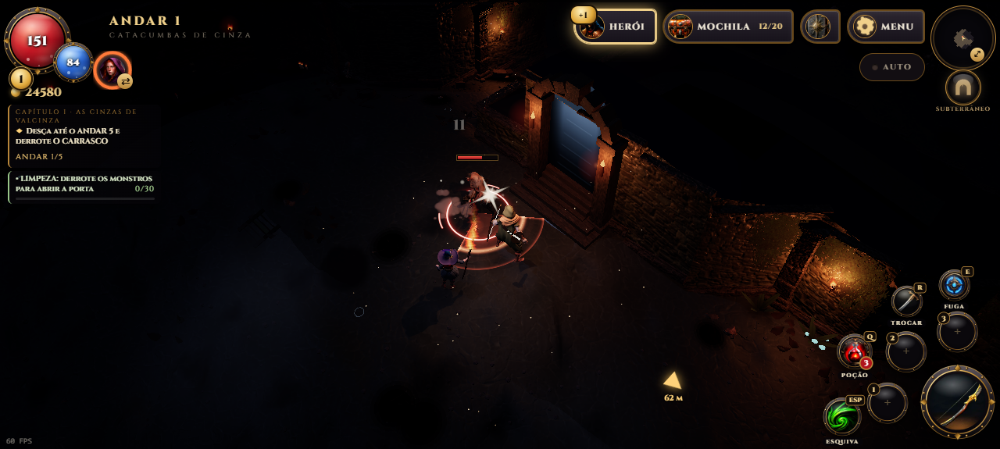
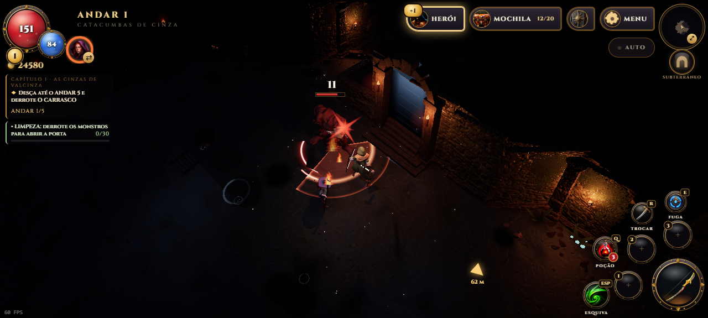
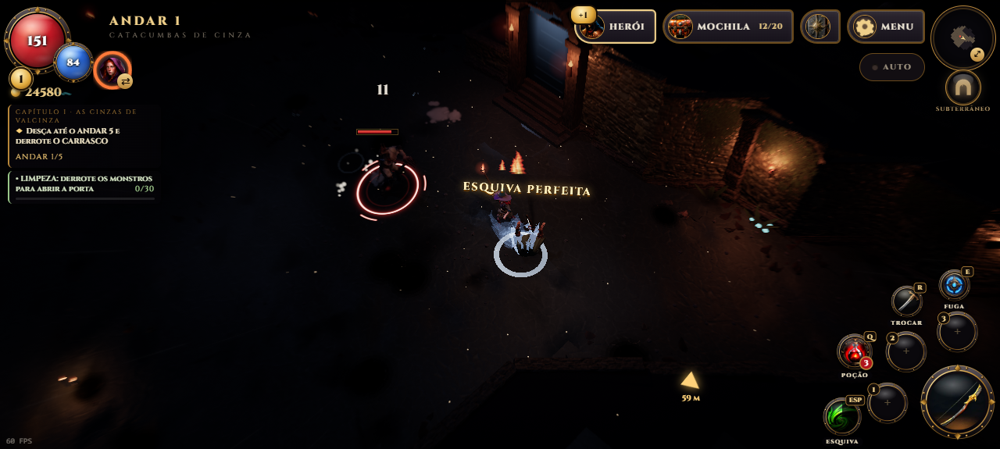
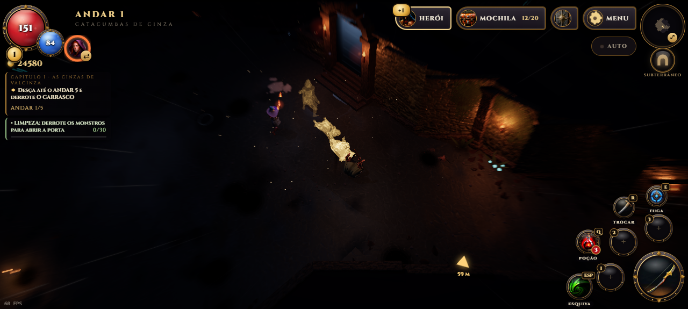

A esquiva perfeita da 1.10.3 saía mais por sorte do que por leitura. Agora o inimigo mostra o instante exato de esquivar, e a esquiva ficou com cara de velocidade.
Cintilar do golpe
No fim do aviso no chão, uma estrela acende na arma do inimigo com um som metálico agudo. Rolar enquanto ela brilha é esquiva perfeita. No golpe comum a estrela é branca e acende pouco antes do impacto.

Golpe comum: estrela branca, a deixa para rolar.
Brutamontes, Homem-Raiz e chefes avisam com uma estrela vermelha e maior, um som grave e um pouco mais de antecedência: o golpe deles dói mais.

Golpe pesado: estrela vermelha no Brutamontes.
Esquiva perfeita mais justa
Rolar para longe no instante do golpe também conta. Antes ela só valia se o herói continuasse dentro da área do ataque. E a esquiva perfeita nunca machuca, nem no golpe lento do Brutamontes.

Rolou para fora no cintilar: esquiva perfeita, câmera lenta e nenhum dano.
Rastro da esquiva
No rolamento, silhuetas translúcidas do herói ficam para trás e somem. São azuis normalmente e ficam douradas, e mais longas, com o Ímpeto acima da metade.

Ímpeto alto: o rastro fica dourado.
Som do Ímpeto
A esquiva perfeita e as esquivas embaladas cortam o ar, e entrar no FRENESI tem um estrondo grave. Menu → Opções → ÍMPETO E VELOCIDADE desliga o rastro junto com o resto.